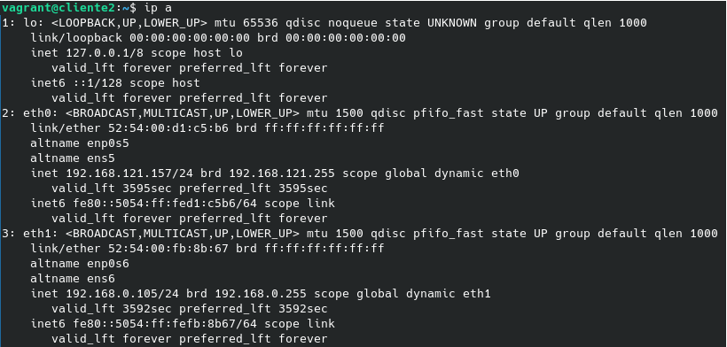

Empecemos por crear un escenario con dos nodos en Vagrant: uno será el servidor DHCP y otro el cliente. Ambos tendrán una red muy aislada, pero solo uno de ellos tendrá una IP estática, el servidor DHCP.
 Veamos el fichero Vagrantfile:
Veamos el fichero Vagrantfile:
Vagrant.configure("2") do |config|
config.vm.define :nodo1 do |nodo1|
nodo1.vm.box = "debian/bullseye64"
nodo1.vm.hostname = "servidor"
nodo1.vm.synced_folder ".", "/vagrant", disabled: true
nodo1.vm.network :private_network,
:libvirt__network_name => "muyaislada",
:libvirt__dhcp_enabled => false,
:ip => "192.168.0.1",
:libvirt__forward_mode => "veryisolated"
end
config.vm.define :nodo2 do |nodo2|
nodo2.vm.box = "debian/bullseye64"
nodo2.vm.hostname = "cliente"
nodo2.vm.synced_folder ".", "/vagrant", disabled: true
nodo2.vm.network :private_network,
:libvirt__network_name => "muyaislada",
:libvirt__dhcp_enabled => false,
:libvirt__forward_mode => "veryisolated"
end
end
Una vez creados los nodos, entramos en el servidor DHCP e instalamos el paquete "isc-dhcp-server":
vagrant ssh nodo1
sudo apt install isc-dhcp-server
Ahora tenemos que editar dos ficheros de configuración:
- /etc/default/isc-dhcp-server: en la línea de las interfaces IPv4 añadimos la interfaz por la que se servirán direcciones IP.
INTERFACESv4="eth1"
- /etc/dhcp/dhcpd.conf: en este fichero añadimos un subnet con la red de las direcciones IP que se vayan a repartir, así como el rango, la máscara de red, la puerta de enlace y el tiempo de concesión.
subnet 192.168.0.0 netmask 255.255.255.0 {
range 192.168.0.100 192.168.0.110;
option subnet-mask 255.255.255.0;
option routers 192.168.0.1;
option domain-name-servers 8.8.8.8, 8.8.4.4;
default-lease-time 3600;
max-lease-time 3600;
}
Guardamos el fichero y reiniciamos el servicio DHCP:
systemctl restart isc-dhcp-server
 Vayámonos ahora a la máquina cliente.
Vayámonos ahora a la máquina cliente.
Para que la interfaz conectada con el servidor reciba una IP de esta, hay que reiniciarla:
sudo ifup eth1
sudo ifdown eth1
Si ejecutamos ahora el comando "ip a", veremos que la interfaz ha recibido una nueva IP en el rango establecido.
vagrant@cliente:~$ ip a
1: lo: <LOOPBACK,UP,LOWER_UP> mtu 65536 qdisc noqueue state UNKNOWN group default qlen 1000
link/loopback 00:00:00:00:00:00 brd 00:00:00:00:00:00
inet 127.0.0.1/8 scope host lo
valid_lft forever preferred_lft forever
inet6 ::1/128 scope host
valid_lft forever preferred_lft forever
2: eth0: <BROADCAST,MULTICAST,UP,LOWER_UP> mtu 1500 qdisc pfifo_fast state UP group default qlen 1000
link/ether 52:54:00:15:fc:78 brd ff:ff:ff:ff:ff:ff
altname enp0s5
altname ens5
inet 192.168.121.40/24 brd 192.168.121.255 scope global dynamic eth0
valid_lft 3137sec preferred_lft 3137sec
inet6 fe80::5054:ff:fe15:fc78/64 scope link
valid_lft forever preferred_lft forever
3: eth1: <BROADCAST,MULTICAST,UP,LOWER_UP> mtu 1500 qdisc pfifo_fast state UP group default qlen 1000
link/ether 52:54:00:44:49:92 brd ff:ff:ff:ff:ff:ff
altname enp0s6
altname ens6
inet 192.168.0.100/24 brd 192.168.0.255 scope global dynamic eth1
valid_lft 3598sec preferred_lft 3598sec
inet6 fe80::5054:ff:fe44:4992/64 scope link
valid_lft forever preferred_lft forever
Podemos ver pruebas de nuestra hazaña en los ficheros de registro de concesiones, tanto en el servidor (/var/lib/dhcp/dhcpd.leases)...
lease 192.168.0.100 {
starts 5 2021/10/08 14:46:12;
ends 5 2021/10/08 15:46:12;
cltt 5 2021/10/08 14:46:12;
binding state active;
next binding state free;
rewind binding state free;
hardware ethernet 52:54:00:44:49:92;
uid "\377\000DI\222\000\001\000\001(\362\367\027RT\000DI\222";
client-hostname "cliente";
}
...como en el cliente (/var/lib/dhcp/dhclient.eth1.leases).
lease {
interface "eth1";
fixed-address 192.168.0.100;
option subnet-mask 255.255.255.0;
option routers 192.168.0.1;
option dhcp-lease-time 3600;
option dhcp-message-type 5;
option domain-name-servers 8.8.8.8,8.8.4.4;
option dhcp-server-identifier 192.168.0.1;
renew 5 2021/10/08 15:13:47;
rebind 5 2021/10/08 15:38:42;
expire 5 2021/10/08 15:46:12;
}
¡Ya tendríamos un servidor DHCP básico completamente operativo!
Configuración de una reserva
Añadimos un segundo cliente en el fichero Vagrantfile:
Vagrant.configure("2") do |config|
config.vm.define :nodo1 do |nodo1|
nodo1.vm.box = "debian/bullseye64"
nodo1.vm.hostname = "servidor"
nodo1.vm.synced_folder ".", "/vagrant", disabled: true
nodo1.vm.network :private_network,
:libvirt__network_name => "muyaislada",
:libvirt__dhcp_enabled => false,
:ip => "192.168.0.1",
:libvirt__forward_mode => "veryisolated"
end
config.vm.define :nodo2 do |nodo2|
nodo2.vm.box = "debian/bullseye64"
nodo2.vm.hostname = "cliente"
nodo2.vm.synced_folder ".", "/vagrant", disabled: true
nodo2.vm.network :private_network,
:libvirt__network_name => "muyaislada",
:libvirt__dhcp_enabled => false,
:libvirt__forward_mode => "veryisolated"
end
config.vm.define :nodo3 do |nodo3|
nodo3.vm.box = "debian/bullseye64"
nodo3.vm.hostname = "cliente2"
nodo3.vm.synced_folder ".", "/vagrant", disabled: true
nodo3.vm.network :private_network,
:libvirt__network_name => "muyaislada",
:libvirt__dhcp_enabled => false,
:libvirt__forward_mode => "veryisolated"
end
end
Después, entramos en la configuración del servidor DHCP para asignarle una reserva al nuevo cliente:
subnet 192.168.0.0 netmask 255.255.255.0 {
range 192.168.0.100 192.168.0.110;
option subnet-mask 255.255.255.0;
option routers 192.168.0.1;
option domain-name-servers 8.8.8.8,8.8.4.4;
default-lease-time 3600;
max-lease-time 3600;
}
host nodo3 {
hardware ethernet 52:54:00:fb:8b:67;
fixed-address 192.168.0.105;
}
Por último, reiniciamos el servicio isc-dhcp-server y la máquina cliente. Al ejecutar el comando ip a, nos saldrá el siguiente resultado:

Si echamos un vistazo al fichero de concesiones, comprobaremos que no se ha guardado este registro, puesto que no es necesario: toda la información que deba haber sobre la reserva ya se encuentra guardada en el fichero de configuración.
Vuelve a pasarte por aquí para ver más artículos y seguir aprendiendo.